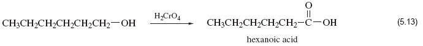
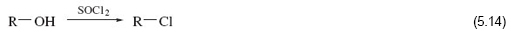
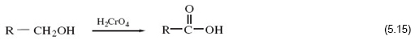

5.1 Functional groups and reactivity
Structure 5.1 is an abbreviated structural formula for hexan-1-ol, an alcohol. As mentioned earlier, don’t worry about the naming of the compounds at this point.
CH3—CH2—CH2—CH2—CH2—CH2—OH 5.1
The functional group here is the —OH fragment of the molecule, often referred to as ‘the alcohol group’.
The reactivity of this molecule is concentrated at the —OH site; and it is possible through an informed choice of other chemical reactants, to change that site (and sometimes the atoms immediately adjacent to it) into something else while leaving the rest of the molecule unchanged.
For example, the liquid thionyl chloride, SOCl2, will convert hexan-1-ol into 1-chlorohexane:
5.12
(Note that in the formulas in this equation all the bonds apart from the ones connecting the functional groups to the rest of the molecule have been omitted; these are known as condensed structural formulae.)
What has happened to the —OH group in this reaction?
The —OH group has been replaced by —Cl.
An example of a change in both the functional group and its adjacent atoms is the reaction of hexan-1-ol with chromic acid, H2CrO4, which yields hexanoic acid:

Here, the —CH2OH fragment of the original molecule has been converted into —COOH. So this molecule now has a different functional group. This is now the carboxylic acid functional group.
What bond types are contained within the carboxylic acid functional group?
Note, in addition to a single bond attaching it to the chain of five carbon atoms, there is one carbon oxygen double bond, and a single bond to an –OH group.
Now look again at the reaction equation.
Note that an arrow has been used, rather than an equals sign.
This type of equation allows you to concentrate attention on the way in which one molecular fragment, in this case—CH2OH, is transformed into another, —COOH.
Organic chemists often write equations of this sort, the reagent that brings about the change is written above the arrow.
Based on what you’ve seen so far, organic molecules can be divided into three parts – what are these?
(i) functional groups, (ii) the immediate environment of the functional group, and (iii) the rest of the molecule.
To a first approximation, the functional group and its immediate environment would be expected to respond to a reactant in exactly the same way whatever the rest of the molecule is like.
Thus, if you write the many molecules containing an alcohol functional group as R—OH, the general form of Reaction 5.12 becomes:

Likewise, if we write the many molecules that terminate in the unit —CH2OH as R—CH2OH, then the general form of Reaction 5.13 becomes:

In principle therefore, Reactions 5.14 and 5.15 allow us to predict the response of many very different molecules to thionyl chloride and chromic acid.
OpenLearn - Discovering chemistry
 Except for third party materials and otherwise, this content is made available under a Creative Commons Attribution-NonCommercial-ShareAlike 4.0 Licence, full copyright detail can be found in the acknowledgements section. Please see full copyright statement for details.
Except for third party materials and otherwise, this content is made available under a Creative Commons Attribution-NonCommercial-ShareAlike 4.0 Licence, full copyright detail can be found in the acknowledgements section. Please see full copyright statement for details.